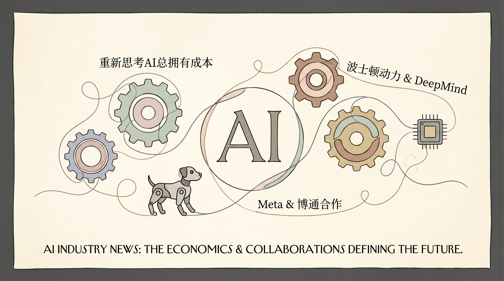

NVIDIA强调在生成式AI时代，数据中心转变为AI代币工厂，以AI推理为主的工作负载产出智能代币。
两克伴AIGC日报
2026-04-16 星期四

本期关注：AI代理技术持续深化，Gemini 3.1开启代理模式、VAKRA聚焦代理推理与故障分析、Springdrift打造长期运行时；Meta与Broadcom合作开发AI芯片降依赖，NVIDIA强调以token成本为核心的AI经济模型，推动产业向高效自主协作演进。
📰 行业动态
Boston Dynamics与Google DeepMind合作，利用Google Gemini提升工业检测系统的自主能力。
Meta与Broadcom达成协议，共同开发AI芯片，以减少对Nvidia的依赖。
Google解锁Gemini 3.1的'Agent Mode'，标志着正式进入代理时代，代理可执行应用中的步骤。
NVIDIA展示在NVIDIA GPU上加速Adobe Premiere色彩分级模式的新特性。
🔥 今日焦点
《Inside VAKRA: Reasoning, Tool Use, and Failure Modes of Agents》一文深入探讨了VAKRA系统中智能代理的推理、工具使用以及故障模式。该研究对于理解智能代理的决策过程和潜在问题具有重要意义。
文章的核心内容概述了VAKRA系统在处理复杂任务时，如何通过推理机制来指导智能代理进行决策，以及代理如何利用工具来提高任务完成效率。同时，文章分析了智能代理在执行任务过程中可能出现的故障模式，为系统设计和优化提供了重要参考。
Springdrift，由s\_brady于2019年开始研发，是一款基于BEAM的Gleam语言编写的持久化、可审计的运行时环境，专为长期运行的智能代理设计。该系统旨在填补智能代理开发领域的空白，具备类似Openclaw等代理的功能，并在此基础上进行拓展。Springdrift的一大亮点在于其自诊断能力，能够识别并处理错误和故障。此外，它还拥有复杂的元认知安全系统，确保智能代理在运行过程中的安全性。
Springdrift的出现对AI领域具有重要意义。首先，它为智能代理的开发提供了强大的支持，有助于推动智能代理技术的进一步发展。其次，Springdrift的自诊断和元认知安全系统，为智能代理的稳定运行提供了保障，有助于提高智能代理的可靠性和实用性。最后，Springdrift的持久化特性，使得智能代理能够在长时间内持续运行，为解决复杂问题提供了可能。
📚 深度长文
Gemini 3.1 Flash TTS：下一代具有表现力的AI语音技术
Gemini 3.1 Flash TTS作为最新一代的音频模型，引入了精细的音频标签，为用户提供了精确控制AI语音的能力，从而实现更具表现力的音频生成。文章深入探讨了这一技术的核心观点，并详细阐述了其关键论据。
《Build GPT in plain Python》一文由Dr. Ashish Bamania撰写，深入探讨了如何在纯Python环境中实现GPT架构，无需借助深度学习框架或依赖。文章的核心观点是，通过自研代码构建GPT模型，不仅可以加深对自然语言处理（NLP）和深度学习原理的理解，还能提高编程技能。
文章首先介绍了GPT的基本原理和架构，然后详细阐述了如何从零开始，利用纯Python实现GPT模型。作者巧妙地运用了多种编程技巧，如动态规划、递归等，使得模型在性能上与使用深度学习框架构建的模型不相上下。此外，文章还针对模型训练、优化和调参等方面进行了深入探讨。
《My bets on open models, mid-2026》一文由Nathan Lambert撰写，深入探讨了开放模型与封闭模型之间的差距，并预测了未来几年这一领域的发展趋势。文章的核心观点是，随着技术的进步，开放模型将在2026年左右取得显著突破，其优势将逐渐显现。作者通过分析开放模型在数据获取、模型可解释性、以及社区协作等方面的优势，为这一观点提供了有力论据。
文章深入剖析了开放模型在数据处理、模型优化、以及社区协作等方面的独特见解，为AI从业者提供了宝贵的参考。作者指出，开放模型能够更好地利用数据，提高模型的可解释性，并促进全球范围内的技术交流与合作。此外，文章还探讨了开放模型在应对数据隐私、算法偏见等挑战方面的潜力。
📄 重点论文
**核心贡献**: 提出了AI智能体安全性的新观点，强调在智能体执行实际操作时，需要超越提示级别的安全措施。
**与AI Agent的关联**: 对AI智能体的安全性研究有重要意义，有助于提高智能体在实际应用中的安全性。
**核心贡献**: 引入了双重轨迹记忆编码方法，通过将存储的事实与具体场景轨迹配对，提高智能体的记忆和推理能力。
**与AI Agent的关联**: 对智能体的记忆和推理能力提升有显著帮助，对智能体的应用有实际价值。
**核心贡献**: 提出了LIFE框架，一个结合了智能体AI和脑启发架构的持续学习框架，旨在提高AI在HPC系统中的能源效率和适应性。
**与AI Agent的关联**: 为智能体在复杂系统中的应用提供了新的思路，有助于提高智能体的适应性和效率。
🛠️ 产品推荐
Show HN：一款名为Cast的AI工具，通过Biscuit平台实现。用户只需描述“使其感觉像冷金属”等感觉，即可轻松构建应用程序。Cast内置了 Claude、GPT、Gemini等AI模型，并自动处理渲染复杂度，极大简化了开发过程。这款工具旨在为技术从业者提供便捷的AI应用开发体验，有效解决传统开发过程中的复杂性问题。
***
Notch Pilot是一款专为MacBook用户设计的创新工具，它将Claude Code实时代码监控功能集成到MacBook的刘海区域。该产品通过AI技术，为开发者提供直观的代码实时反馈，有效提升开发效率。Notch Pilot不仅解决了传统代码监控方式在屏幕空间上的限制，还通过智能算法优化了代码展示效果，让开发者能够更专注于代码编写。这款产品适用于追求高效开发体验的技术从业者，是提升工作效率的得力助手。
***
Omi是一款桌面生活助手，具备屏幕监控、对话识别和智能推荐功能。它通过实时分析用户屏幕和对话内容，提供个性化建议，帮助用户提高工作效率。Omi集成了Cluely、Rewind、Granola、Wisprflow、ChatGPT和Claude等工具的优势，实现了智能、主动的提醒功能。其核心创新在于精准捕捉用户行为，实现基于屏幕的智能通知，有效解决用户在信息过载和任务繁杂中难以决策的问题。
***